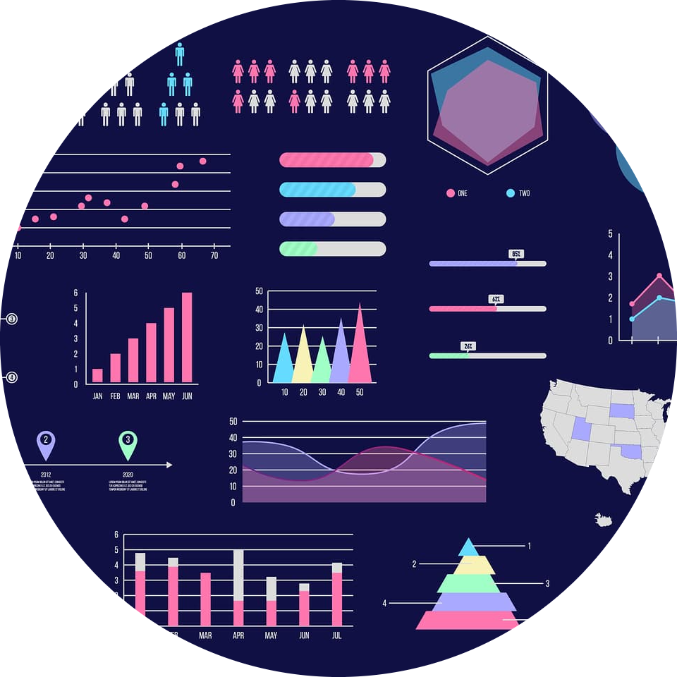

Hi there!
I grew up in St. Thomas in the US Virgin Islands, and have lived in the mainland USA since I was 14 years old. I have been honorably discharged from the US Army for a broken shoulder (from a fast roping accident), and have since discovered my passion for collecting, organizing, transforming and visualizing data of all sorts to glean actionable insights. I'm enjoying the change of pace and definitely not looking to jump out of any more planes!
I recently finished my MBA, and I am wrapping up my MS in Business Intelligence and Analytics at Saint Joseph's University. I am currently working as a Graduate Student Researcher focusing on financial, economic and public policy related publications. I have graduated from Temple University's BBA in Accounting program. I enjoy looking for the perfect milkshake (Black Tap in NYC is the top for now), hiking, hanging with my dogs and learning new things!
Pandas, NumPy, NTLK, Textblob, Matplotlib, Seaborn

I have worked with Python to web scrape data, clean/parse data, conduct natural language processing + sentiment analysis and ultimately visualize data using Seaborn + Matplotlib
Tidyverse, DPLYR, GGPLOT, Rplot, Machine Learning, Stats

I showcase a data cleaning, data visualization and predictive modeling project I created using R. I dissect New York City 5-car-crashes including delving into the who, what, where, when and why of the data
Dashboards, Breweries, Admission Stats, Malteses, Property Taxes

These are data visualizations that I created using Tableau and PowerBI using Open Data sources. I explore breweries, malteses (the ferocious little dogs), crime, admissions, telecom and even property tax data
SQL, Oracle 19c, Database Diagrams, Data Management
I created data warehouses and databases in Oracle 19c via MySQL and used data from it to generate Tableau visualizations and a regression models (via JMP)
Machine Learning, Regression, Neural Networks, Decision Trees
This project showcases some predictive analytical models (neural networks, stepwise regression, linear regression & decision trees) that I developed in SAS Enterprise Miner to predict powerlifting totals from 16 attributes
Data Mining, Machine Learning, PCA, Stats, Data Cleaning
This is a collection of JMP case studies (showcasing data mining & machine learning) that I put together explore some obscure data sets. I predict churn + admissions (to hospitals and universities) + nutrients (in candy bars) and rank pharmacies